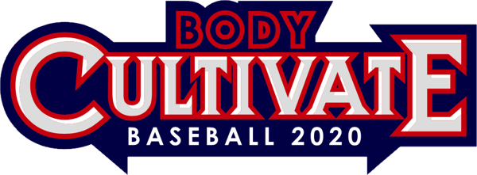

X-FACTOR ・ CONVENTIONAL
右打者を真上から見た図です。従来型は、下半身を止めたまま、ロードのときに上半身を捕手側へひねって捻転差を作ります。ひねった分だけ「戻す距離」が生まれ、その差を持ったまま着地まで待つことになります。着地のあとは間に合わせるために右肩と右腰が同時に出て、捻転差は打つ瞬間までに閉じていきます。

① 骨盤と両肩、それぞれの向き
② 骨盤から見た肩の撚り（＝捻転差）
角度は説明のための模式値です。0°＝構えの向き。プラスは投手方向へ開く向き、マイナスは捕手側へひねる向き。
3D VIEW
上の図と同じ動きを、立体の打者で見ます。骨盤（青）と両肩（金）の間の赤い面が、胴体の「撚り」です。ロードで大きく撚れ、ステップイン中はそのまま待ち、着地のあとは肩と腰が一緒に回って、撚りがほどけていきます。投手から見ると、ロードで背中が投手に見えるほどひねっているのがわかります。ドラッグで視点を回せます。
時間は上の図と連動しています。
体修塾BCA Body Cultivate Academy